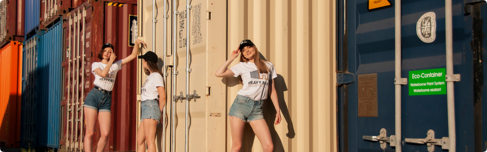
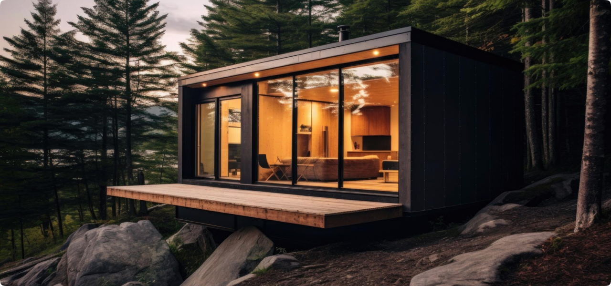

Морской контейнер под дом
Сфера применения морских контейнеров довольно широка. Стальные боксы для грузоперевозок активно используют строители. Это подходящий вариант для обустройства жилья. Сегодня мы поговорим о том, как выбрать морской контейнер под дом, а также рассмотрим плюсы и минусы подобного жилья.
Дом из морского контейнера: особенности
Во второй половине прошлого столетия морские контейнеры стали использоваться в качестве жилья. Списанные стальные боксы начали применять в
качестве модулей и возводить незамысловатые постройки. Считается, что именно морские контейнеры стали основой для развития модульной архитектуры. Современные производители выпускают контейнеры для грузоперевозок разных видов. Но не все они подходят для строительства. При выборе учитывайте размеры и конструкционные особенности морского контейнера.
Оптимальный вариант: классические 20-футовые и 40-футовые морские контейнеры. Эти боксы выполнены из прочной стали. Конструкции можно соединять между собой и экспериментировать с форматом здания.
Также учитывайте предназначение будущей постройки. 20-футовые контейнеры идеальны для обустройства дачных домиков или подсобных помещений. А вот 40-футовые ящики по размеру схожи со стандартной комнатой. Они могут использоваться для обустройства жилого помещения. Здесь с комфортом разместится один человек.
Если конструкции соединить между собой и убрать перегородки, то получится строение, в котором сможет с удобством проживать семья из нескольких человек.
Этапы строительства дома из морского контейнера
Конечно, мы не предлагаем вам жить в списанном морском контейнере. К строительству нужно подойти серьезно. А лучше всего поручить работу профессионалам.
Представим основные этапы работ строительства дома из морского контейнера:
- обустройство фундаментной основы;
- монтаж конструкций между собой;
- оборудование дверных и оконных проемов;
- устройство кровли;
- утепление;
- монтаж коммуникационных и вентиляционных систем;
- внутренние отделочные работы.
Понятно, что возведение подобного дома требует получить специальное разрешение, создать проект и приобрести дополнительные строительные материалы. Но практика показывает: процесс строительства в разы короче и дешевле стандартного возведения здания.
Преимущества и недостатки домов из морских
контейнеров
Дома из морских контейнеров набирают популярность во всем мире. Стальные боксы используются не только в частном, но в промышленном строительстве.
Представим список достоинств подобных сооружений:
- скорое строительство (2-3 месяца);
- экономия средств при обустройстве фундамента (не требуется заливать усиленный фундамент, это – легкая конструкция);
- возможность реализовать самый фантастический проект;
- не нужно учитывать особенности грунта и местности;
- устойчивость;
- прочность;
- длительный срок эксплуатации;
- автономность строения.
Возводить дом из морского контейнера можно в любое время года, а жить в нем сразу же после окончания работ. Не нужно ждать, пока завершится процесс усадки.
При наличии опыта в области строительства и минимальных навыков удастся возвести дом из морского контейнера собственными силами.Владелец дома из морского контейнера значительно сэкономит. Цена морского контейнера ниже, чем стоимость объема строительного материала для возведения здания такого же формата.
Вы получите оригинальное жилье, выполненное с учетом личных предпочтений. Стоимость строительства сокращается в разы. Отзывы тех, кто решился на постройку дома из морского контейнера подтверждают: это полноценный, комфортный вариант для проживания.
К минусам домов из морских контейнеров относят дефицит специалистов. Пока еще трудно найти строителей, работающих с подобными модулями. Кроме того, требуется обработать конструкции антикоррозийными составами, чтобы предупредить преждевременное разрушение. Но данное действие производится с любыми типами строительных материалов и основ.
Как использовать морской контейнер на своем участке?
Морские контейнеры предлагают купить по доступной цене. Мы говорим о списанных боксах, бывших в употреблении. Такую конструкцию можно с пользой использовать на своем участке. Она идеальна для возведения бытовой постройки, сарая для скота, инвентаря.
Умельцы сооружают из морских контейнеров гостевые домики, бани, зону для уединенного отдыха.
Морские контейнеры позволяют организовать уличное пространство. Здесь можно оборудовать место для детских игр. Они смогут играть и не мешать шумом домочадцам.
В Америке и Канаде морские контейнеры стали применять как пункты для тестирования и вакцинации. Такое применение стальным боксам нашли в период коронавируса.
Все возможности использования морских контейнеров как элемента строительного материала перечислить трудно. Фантазируйте и экспериментируйте. Стоимость морских контейнеров не велика в сравнении с закупкой стройматериала для стандартной постройки.
Заявка
Оставьте заявку и наши специалисты свяжутся с вами в кратчайшие сроки